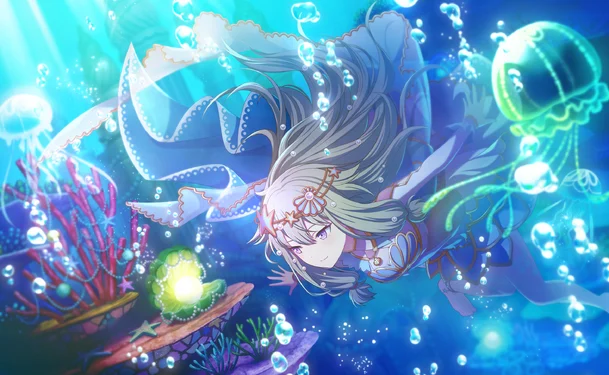

Nama: Kusanagi Nene
Program Studi: Teknik Informatika
Universitas: Universitas Pancasila
Seorang gadis yang bercita-cita menjadi aktris musikal kelas dunia. Kepercayaan dirinya dalam bernyanyi pernah hancur saat latihan untuk sebuah pertunjukan yang akan diikutinya. Namun, sebagai hasilnya, ia juga mampu menegaskan kembali hasratnya yang kuat untuk bernyanyi.
Saat ini, ia bertekad untuk belajar dan mengalami banyak hal di dunia bersama dengan rekan-rekan pemainnya.